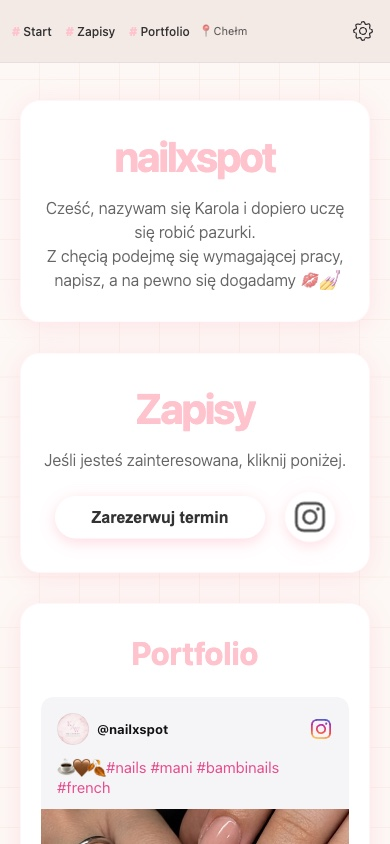
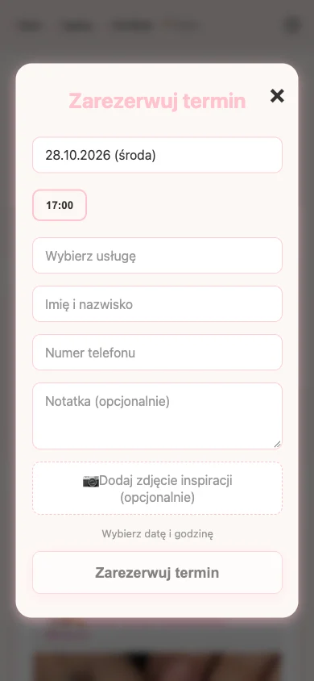

nailxspot
Booking website for a nail studioStrona do zapisów dla stylistki paznokci
A website I built for a nail artist. Clients use it every day to book appointments online instead of calling or writing messages, and the owner manages everything from her own admin panel. Strona, którą zrobiłem dla stylistki paznokci. Klientki codziennie zapisują się przez nią na wizyty zamiast dzwonić czy pisać wiadomości, a właścicielka zarządza wszystkim we własnym panelu administracyjnym.
What you'll find on the siteCo znajduje się na stronie
- #start
- A short introduction of the studio and the artist.Krótkie przedstawienie salonu i stylistki.
- #zapisy
- The booking form: a calendar that shows only free days, available hours, a list of services, contact details, an optional note and an inspiration photo.Formularz rezerwacji: kalendarz pokazujący tylko wolne dni, dostępne godziny, lista usług, dane kontaktowe, opcjonalna notatka i zdjęcie inspiracji.
- #portfolio
- A gallery of finished nails taken from the studio's Instagram.Galeria gotowych stylizacji pobierana z Instagrama salonu.
- admin panelpanel admina
- A login-protected page where the owner adds free slots and sees every booking with the attached photo.Strona chroniona logowaniem, na której właścicielka dodaje wolne terminy i widzi wszystkie rezerwacje razem z dołączonymi zdjęciami.
How it worksJak to działa
- 01
The owner adds free dates and hours in the admin panel.Właścicielka dodaje wolne dni i godziny w panelu admina.
- 02
A client picks one of them in the calendar and fills in the form.Klientka wybiera jeden z nich w kalendarzu i wypełnia formularz.
- 03
The booking is saved in the database and the hour disappears from the calendar, so nobody else can take it.Rezerwacja zapisuje się w bazie danych, a godzina znika z kalendarza, więc nikt inny jej nie zajmie.
- 04
The new booking appears in the owner's panel right away.Nowa rezerwacja od razu pojawia się w panelu właścicielki.